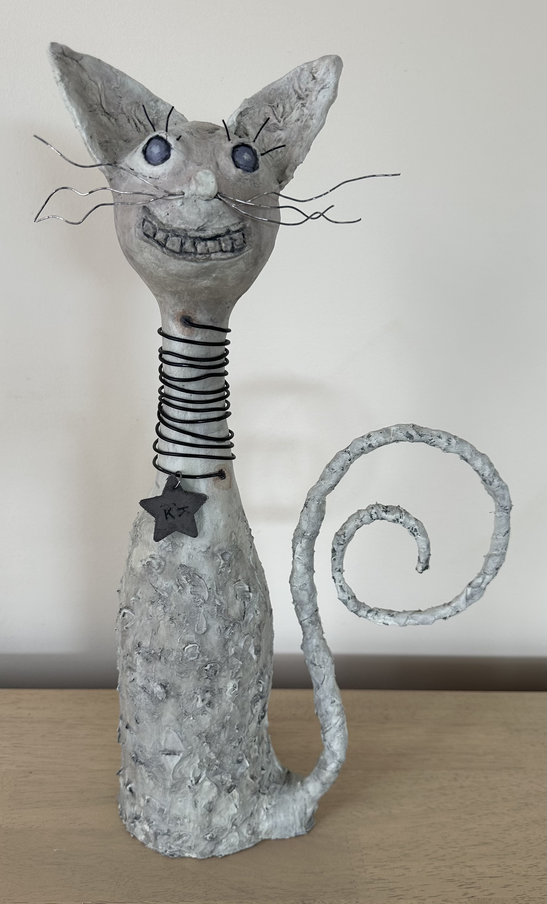

Tom
The Wayward Collection


With his oversized ears, wildly wandering whiskers and an impossibly toothy grin, Tom is a character who makes absolutely no attempt to blend in.
There is something delightfully peculiar about him. His wide-eyed expression suggests an air of innocence, yet that mischievous grin hints at a personality that may be anything but.
Standing tall on an elongated neck bound in dark wire, Tom's weathered, heavily textured body contrasts with the playful curl of his exaggerated spiral tail. His irregular surfaces, sculpted features and unconventional proportions celebrate the beauty of imperfection and the unexpected.
Created from an unlikely combination of repurposed materials, paper clay, fabric, wire and textured finishes, Tom is an original, one-of-a-kind mixed-media sculpture.
As the very first sculptural character created for KK Art Space, Tom holds a special place in the evolution of the collection — a wonderfully unconventional beginning to a growing family of equally wayward personalities.
Important Safety Information
Tom is a sculptural artwork, not a toy. His delicate features and wire elements make him unsuitable for handling by young children. Keep out of their reach.